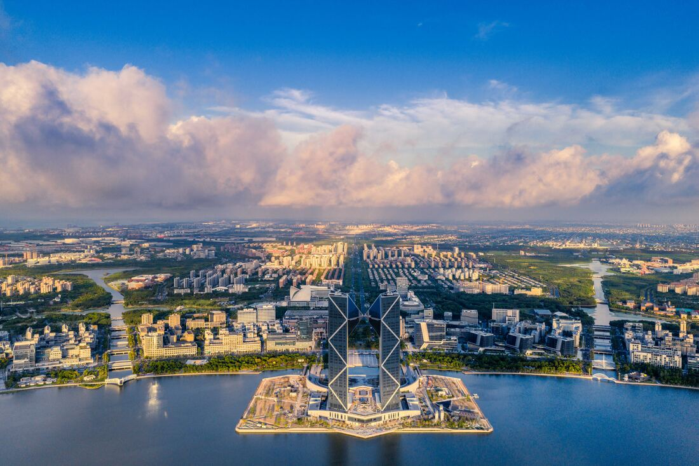
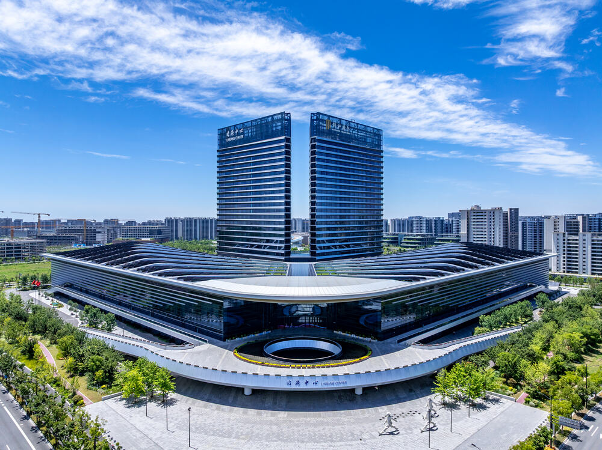
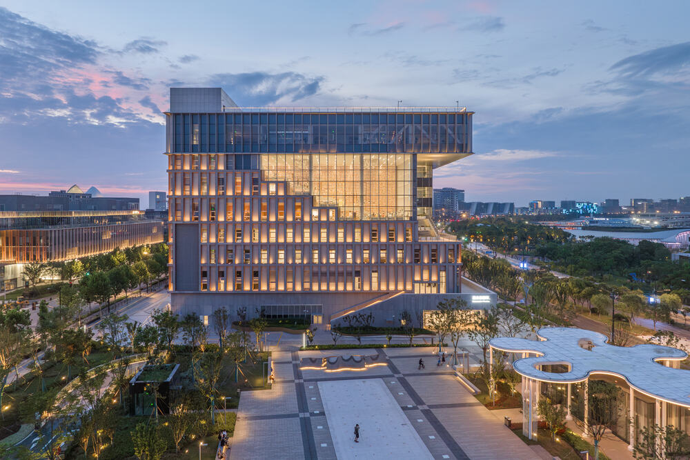

滴水湖与西岛。图源：临港新片区管委会
今天周六。
滴水湖一天里，塞了三件事。最重的一件，就在上午。
如果坐最早那班16号线，5点50分从龙阳路发车，6点47分到滴水湖。出站时天刚亮透，湖边的风先给你一巴掌。
这个点来，你赶上的不只是一片湖。
— 01 —
今早，湖边开的是这个会

临港中心，世界顶尖科学家论坛永久会址。图源：临港新片区管委会
10月30日到11月1日，2026世界顶尖科学家论坛在临港中心开，会期三天。今天上午，开幕式、颁奖典礼和主论坛，全在这一场里。
规模不小。32位顶尖科学家确认到场，里面有6位诺贝尔奖得主、3位图灵奖得主，7位是第一次来。再算上140位资深科学家、81位青年科学家，这几天滴水湖边的“大脑密度”，大概比上海任何一栋写字楼都高。
今年的主题是“范式变革：科学突破的下一个十年”。听着有点虚，落到议程上却很实——六场平行论坛，分别聊未来半导体、生物医药、空天信息、人工智能、未来能源、量子科学。
芯片、药、卫星、AI、能源、量子。六个方向，基本就是临港这几年在押的注。
2026顶科奖一共11位得主。生命科学或医学奖的4人里，3位是华人，邵峰成了这个奖创办以来首位中国籍获奖者。今年新设的青年科学家奖，6位得主里5位是华人，每人奖金100万。
明天11月1日闭幕，主题是“顶科论坛十周年，再出发”。
这场会不对外卖票，但它跟每个住在临港的人都有关系。
论坛从2018年落地上海，永久会址就在滴水湖边。科学家来开会，顺手看的是这座城能不能留下人。
— 02 —
同一时间，湖边还有两场“跑”
今天在滴水湖，还有第三届残健融合轮椅跑，名字叫“无以‘轮’比·共驰人生”。前两届分别在郊野公园和上海国际旅游度假区办，今年轮到临港。
另一场更大众。第三届滴水湖棒棒糖骑行，今天是最后一天。
路线40公里，从滴水湖洲际酒店出发，绕环湖一路、二路、三路，把朵云书院、一尺花园、壹号码头、春花秋色公园、航海博物馆、天文馆串成一个“棒棒糖”。每天9点到18点，去酒店礼宾部领电子骑行手册、签协议就能出发。
免费，但车自带，保险自己买。全程骑完、发一篇小红书，前300名有奖。
四十公里不是闹着玩的。平时不骑车的人，别一口气硬上，骑到北岛折返，也能领一份秋天。
— 03 —
你今天能进的三个地方

朵云书院（滴水湖店）。图源：临港新片区管委会
会场进不去，湖边能玩的还是那些。周六人多，顺序排好，体验差很多。
上海天文馆。9点半开馆，4点停止入馆，周一闭馆，成人30元。周六延时开放到晚上8点，但票得提前约，热门时段常常几天前就空了。
中国航海博物馆。9点半到4点，3点半就不让进了。成人30元，同样周一闭馆。想看船、看航海史，这里比天文馆更“实”。
环湖草坪。不要钱。帐篷一支，风筝一放，一下午就过去了。别搭在步道和亲水平台上，风大的时候，天幕记得压好。
饿了往朵云书院、一尺花园、壹号码头走，书店加咖啡，坐着能看水。这几家大多十点后才开门，想吃热乎早饭，去地铁站和山兰路步行街。
— 04 —
抄一张周六时间表
第一次来，照这个走就行：
| 08:00 | 到湖边，先走一段环湖绿带，8.5公里走不完就走到北岛折返 |
| 09:30 | 进天文馆，或者航海博物馆，二选一 |
| 12:00 | 湖边吃饭，十一点前落座，避开等位 |
| 14:00 | 朵云书院翻书，或去草坪躺着 |
| 16:30 | 西岛看日落，湖边风大，外套穿上 |
— 05 —
为什么都挤在滴水湖
一个湖，上午开科学家论坛，同时办轮椅跑和骑行，不是巧合。
临港把自己定位成“年轻的城，年轻人的城”。口号背后是有账本的：临港科创城定了个目标，到2027年底，高新技术企业不少于2000家，导入创新创业人才4万人以上。
论坛开幕前，秋季校招直接开进北大，近40家单位放出900多个岗位，覆盖集成电路、民用航空、智能汽车与高端装备。
今年4月出的“超级个体”政策，给一人公司这类小创业主体最长3年办公场地免租，算力服务最高补贴80%。
产业也接得住。上海集成电路产业规模2025年到了5800亿元，今年1到8月产值同比涨20%。浦东这条链子超过3000亿元，占全市七成、全国两成以上。
科学家来不来，看的不是风景，是这座城有没有下文。
对普通人的意义也直接：岗位、学校、医院、周末能去哪。这些事，比一栋楼好不好看重要得多。
— 06 —
出门前，记四件事
带外套。湖边的风，比市区大不止一点，中午热，傍晚凉。
看好回程。滴水湖往龙阳路，末班车22点30分，今天人多，别卡着点走。
票提前约。天文馆和航海博物馆都实名预约，周一两馆都闭馆。
骑车买保险。棒棒糖骑行今天最后一天，玩得开心，也得玩得稳。
今天你在滴水湖吗？拍到什么，评论区放一张，我看看今天湖边有多少人。
这篇写的是白天。傍晚的滴水湖是另一副样子，灯光、人群、烟火气，留到下一篇说。
— 完 —
图源：临港新片区管委会
资料：上海发布、临港新片区管委会、顶科论坛、上海天文馆